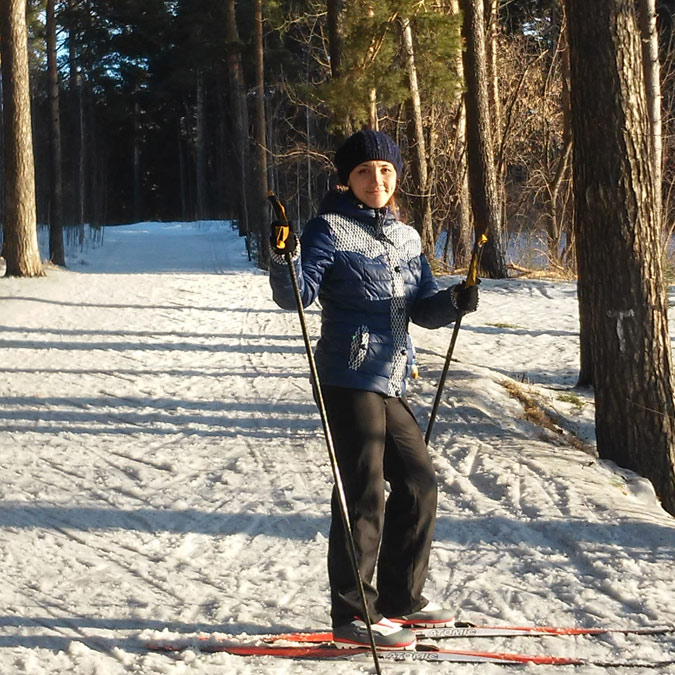

Поречная Марина
Личные сведения
- г.Новосибирск, р-он м.Студенческая
- Тел.: +7 923 198 91 90
- E-mail: porechnaya-mv@yandex.ru
- Дата рождения: 13.05.1987
- Семейное положение: замужем, есть дети (3 года и 6 лет)
Фото


Образование
- 2010г. Математик-системный программист, Новосибирский государственный технический университет, ф-т Прикладной математики и информатики, Специалист
- 2010г. Переводчик в сфере профессиональной коммуникации (повышение квалификации), Новосибирский государственный технический университет, Переводчик (технический английский)
Ключевые навыки
- PHP, OOP, MVC
- HTML5, CSS3, JavaScript, Bootstrap, Adobe Photoshop
- 1С-Битрикс, OpenCart, Joomla CMS, CMS Wordpress
- React-redux, jQuery, Ajax
- Git, SVN, Jira, Bash, Jetbrains Phpstorm
- СУБД, MySQL, PostgreSQL, SQL
- Разработка технических заданий, аналитические исследования, техническая документация
Опыт работы
| Ноябрь 2016 — по настоящее время |
Hearst Shkulev Digital Regional Network Новосибирск Должность: аналитик, технический писатель (аутсорс) |
Разработка и написание ТЗ, системный анализ (подготовка маппингов данных для задач интеграции и рефакторинга) |
| Февраль 2016 — декабрь 2016 |
Компания: Мопра Должность: Веб-разработчик |
Удаленная работа. Доработка стандартных модулей и компонентов CMS Joomla, создание модулей на основе API CMS. |
| Настоящее время- Ноябрь 2013 | Декретный отпуск |
Фриланс разработка на различных веб-проектах, в т.ч. собственных. Опыт: Joomla 3 разработка расширений, OpenCart доработки движка, WordPress. |
| Октябрь 2012 — Ноябрь 2013 |
Компания: OOO "Центр автоматизации энергосбережения" Новосибирск Должность: Аналитик |
Написание документации, обработка и систематизация данных. |
| Февраль 2011 — Октябрь 2012 |
Компания: OOO "Центр автоматизации энергосбережения" Новосибирск Должность: Программист |
Разработка сайтов. Опыт: CMS Bitrix, PHP (OOP), HTML, JS, jQuery, Ajax, MySql, git, svn, jira. |
| Ноябрь 2010 — Февраль 2011 |
Компания: ГЦИ "Эгида" Новосибирск Должность: Программист |
Разработка и модернизация сайтов. Опыт: CMS Wordpress, PhpBB, Joomla, Drupal, PHP, HTML, JS, MySql. |
| Февраль 2010 — Сентябрь 2010 |
Компания: ООО "IIConsult" Новосибирск Должность: Программист |
Разработка и модернизация сайтов. Опыт: CMS Wordpress, Joomla, PHP, HTML, JS, Ajax, MySql, Google Maps API. |